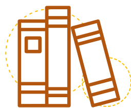
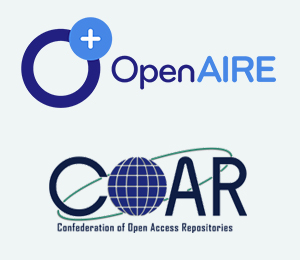

Série 3 | Curso 1
Acesso Aberto
Aula 3
Experiência Nacional e Regional
Nessa aula trataremos do desenvolvimento nacional consciente da importância do Acesso Aberto, vamos entender mais?
Aproveite o conteúdo e desejamos a você bons estudos!
O Movimento do Acesso Aberto no Brasil
O Movimento do Acesso Aberto no Brasil
O movimento no Brasil teve em sua origem diversas iniciativas, como você verá a seguir:
SciElo - Scientific Electronic Library Online
Criada em 1998, a SciELO se define como um “Projeto que tem por objetivo o desenvolvimento de uma metodologia comum para a preparação, armazenamento, disseminação e avaliação da produção científica em formato eletrônico.”
BDTD - Biblioteca Digital Brasileira de Teses e Dissertações
Criada e mantida pelo Instituto Brasileiro de Informação em Ciência e Tecnologia (Ibict) em 2002, a BDTD integra e dissemina os textos completos das teses e dissertações defendidas nas instituições brasileiras de ensino e pesquisa. Reúne 115 instituições, mais de 400 mil dissertações e 100 mil teses.
Como podemos ver, as iniciativas que já estavam na direção do Acesso Aberto ocorreram no Brasil antes mesmo das primeiras declarações que deram forma ao Movimento. Mas, inicialmente, principalmente os editores de revistas científicas de acesso pago, não foram muito receptivos à ideia do Acesso Aberto, ainda que os custos de impressão e circulação fossem muito altos.
O Movimento de Acesso Aberto (MAA) trouxe uma mudança no paradigma da comunicação científica, que teve (e ainda tem) que ser, pouco a pouco, assimilada por seus atores.
Fonte: BDTD.
IBICT - Instituto Brasileiro de Informação em Ciência e Tecnologia
O IBICT é uma instituição pública federal de pesquisa, que foi constituída para ocupar-se da coleta, organização, disseminação e preservação da informação científica e tecnológica nacional.
Foi a partir do conhecimento da iniciativa de Los Álamos (MUELLER, 2006), que mostrou as oportunidades que a tecnologia e a filosofia dos Open Archives traziam o que o IBCIT passou a investigar e disseminar a ideia do compartilhamento de informações científicas no país.
Seguindo os pressupostos dos Open Archives, em 2002 criou a Biblioteca Digital Brasileira de Teses e Dissertações (BDTD), que ampliou o acesso e visibilidade das teses e dissertações brasileiras, e de brasileiros no exterior.
O Ibict iniciou o trabalho de implantação das bibliotecas digitais de teses e dissertações nas instituições brasileiras de ensino e pesquisa, que possuem cursos de pós-graduação stricto sensu.
Para auxiliar as bibliotecas que não possuíam sistemas para o gerenciamento de teses e dissertações, desenvolveu o software Sistema de Publicação Eletrônica de Teses e Dissertações - TEDE.
Também em 2002, a Coordenação de Aperfeiçoamento de Pessoal de Nível Superior (CAPES), desenvolveu o Banco de Teses da Capes, uma base de dados referenciais que permite recuperar os resumos das teses e dissertações defendidas nos programas de pós-graduação do Brasil desde 1987.
Para auxiliar o Brasil na criação de uma infraestrutura de Acesso Aberto, o Ibict apresentou um projeto, cujas metas estavam relacionadas com as duas estratégias propostas pelo MAA, à Financiadora de Estudos e Projetos (Finep). Com o projeto aprovado, o instituto promoveu as seguintes ações estruturantes:
As iniciativas da CAPES e da BDTD são concomitantes, mas, inicialmente, a da CAPES não permitia a consulta ao texto completo, nem se utilizava de padrões de interoperabilidade abertos. Hoje, o Banco de Teses da Capes provê o acesso ao texto completo e passou a fazer uso de tecnologias similares ao da BDTD.
A Portaria nº 13 da CAPES de 2006, que “institui a divulgação digital das teses e dissertações produzidas pelos programas de doutorado e mestrado reconhecidos” e torna “obrigatório instalar e manter, [...], arquivos digitais, acessíveis ao público por meio da Internet, para divulgação das dissertações e teses de final de curso” ,impulsionou o depósito e a disponibilização das teses e dissertações nas bibliotecas digitais de teses e dissertações e repositórios das instituições de ensino e pesquisa e, consequentemente, na BDTD.
Ao finalizar o projeto do Ibict em 2016, tinham sido criados 35 repositórios institucionais e mais de 900 revistas em acesso aberto. Foram colocados à disposição mais de 500.000 documentos, em texto completo, fruto da produção científica nacional no Portal oasisbr.
Outra criação importante do Ibict é o Diretório de Políticas Editoriais das Revistas Científicas Brasileiras (Diadorim). Se trata de uma ferramenta de auxílio aos depositantes, relacionada aos direitos autorais do titular do direito de autor em relação ao documento que está sendo depositado.Em março de 2019, o Diadorim possuía mais de 1.700 revistas que cadastraram suas políticas. Veja o vídeo ao lado para compreender ainda melhor:
Vídeo 2 - Diadorim - Diretório de políticas editoriais das revistas científicas brasileiras
Fonte: Ciência Aberta Brasil - Ibict.
Observamos então, que o surgimento da web e as suas facilidades de publicação digital, soluções tecnológicas que auxiliam no gerenciamento da revista científica, como o da circulação, e permitiam uma redução de custos geral e no tempo de publicação. O mais conhecido e utilizado software de gerenciamento de revistas científicas, no Brasil, é o Open Journal System (OJS)
O Ibict estudou, traduziu e passou a usar tanto as tecnologias relacionadas à gestão de revistas científicas, quanto à construção de repositórios digitais da produção científica (os softwares OJS e EPrints/DSpace). Ao seguir as discussões mundiais sobre as tecnologias mais adequadas e utilizadas para a construção de repositórios, o Ibict terminou por optar e disseminar a tecnologia livre DSpace para a construção de repositórios. A disseminação do software OJS contribuiu sobremaneira no entendimento das vantagens do Acesso Aberto por parte da comunidade editorial brasileira, que hoje, em sua grande maioria, apoia e promove o movimento de acesso aberto.
Duas instituições de pesquisa, de reconhecido papel no desenvolvimento científico brasileiro, a Fundação Oswaldo Cruz (Fiocruz) e a Empresa Brasileira de Pesquisa Agropecuária (Embrapa) têm sido fundamentais na implementação do Acesso Aberto no Brasil.
Para incentivar o desenvolvimento do Acesso Aberto em todas as regiões do Brasil e ter um canal direto com representantes de todas elas, o Ibict criou a Rede Brasileira de Repositórios Institucionais (RIAA) e impulsionou a criação de subredes regionais. A primeira subrede criada foi a Rede Norte de Repositórios Institucionais (RIAA/Norte) , seguida da Rede Sul de Repositórios Institucionais, coordenada pela Universidade Federal dos Pampas, mas que até o momento não conseguiu ter uma atuação efetiva, da Rede Nordeste de Repositórios Digitais (Renere), coordenada pela Universidade Federal do Rio Grande do Norte e pela Universidade Federal de Pernambuco. A Rede Sudeste de Repositórios (RIAA/Sudeste) foi criada em seguida e, finalmente, a Rede Centro-Oeste de Repositórios está em vias de ser criada. A atuação dessas subredes tem sido fundamental para a conscientização da importância do Acesso Aberto e para a o surgimento de novos repositórios, que hoje já ultrapassam o número de cerca de 150 criados.

Outro desenvolvimento importante na área do Acesso Aberto foi o Repositório Comum do Brasil (Deposita), uma base de dados para reunir e divulgar a produção científica dos pesquisadores de instituições que ainda não possuem seus próprios repositórios institucionais. Uma espécie de repositório para os “sem repositórios”. A política adotada é a de, em existindo uma quantidade razoável de depósitos de uma mesma instituição, o Ibict incentivará a instituição a criar o seu próprio repositório institucional.
O Acesso Aberto no Brasil segue em franca evolução; hoje, o Ibict e as demais instituições públicas e privadas, buscam cada vez mais que a sua produção científica esteja em livre circulação na internet. As principais universidades e institutos de pesquisa brasileiros seguem adotando os preceitos do MAA e multiplicando os seus adeptos pelo país.
Uma rede de repositórios latino-americanos – LA Referencia
Resultado de um projeto apresentado pela Cooperación Latinoamericana de Redes Avanzadas (CLARA), ao Banco Interamericano de Desenvolvimento (BID), dentro da iniciativa Bens Públicos Regionais (BRP), foi criada a Rede de Repositorios de Acesso Aberto a la Ciencia (LA Referencia). Basicamente a atuação da LA Referencia está baseada em três pilares: desenvolvimento de tecnologia de coleta e plataforma agregadora, diretrizes e coleta de metadados e acordos de interoperabilidade entre os países latino-americanos e Portugal. Sua missão é oferecer, em Acesso Aberto, a produção científica da América Latina que é financiada com fundos públicos, através da cooperação e articulação de uma rede federada de repositórios institucionais, com base em acordos regionais e estratégias nacionais de Acesso Aberto.
Neste sentido, foram realizadas as seguintes ações estruturantes, que fizeram com que o Projeto alcançasse o êxito, conforme Amaro et al. (2019, p. 128-129):
- Estabelecimento de uma estratégia de trabalho comum, que levou em consideração os diferentes níveis de desenvolvimento do tema em cada país;
- Realização de um diagnóstico regional que foram base para a formulação de acordos;
- Estabelecimento da estratégia rede/país onde se optou pela criação/utilização de nódulos nacionais que servissem para a realização das coletas de metadados;
- Criação de padrões de metadados e interoperabilidade próprios;
- Estabelecimento das tipologias documentais a serem coletadas;
- Desenvolvimento de um coletador próprio;
- Criação de uma estratégia de capacitação;
- Assinatura, no ano de 2012, pelas Autoridades de Ciência e Tecnologia e Inovação dos países-membros, dos seguintes documentos: Acordo de Cooperação para a constituição da rede LA Referencia; declaração de Acesso Aberto, onde LA Referencia fez parte da Declaração de Acesso Aberto de Berlim
A LA Referencia possui o seu portal agregador da produção científica da região que reúne hoje, em março de 2019, mais de 1.500.000 documentos provenientes da produção científica dos 10 países que compõem a Rede.
No ano de 2015, participou de um Projeto Open Access Infrastructure for Research in Europe (OpenAIRE), cujo objetivo era fortalecer a relação das infraestruturas europeias de Acesso Aberto com outras regiões do mundo, em particular com a América Latina e os Estados Unidos. A partir desse projeto e a adoção das diretrizes OpenAIRE, os dados presentes no Portal da LA Referencia passaram a ser coletados pelos pela Projeto europeu.
A Rede é hoje, de fato, uma referência mundial quando se trata da produção científica latino-americana e participa ativamente da Confederation of Open Access Repositories (COAR). A COAR é uma organização mundial que promove o acesso aberto, a visibilidade e a disponibilidade de resultados de pesquisas científicas em redes globais de repositórios digitais.
A LA Referencia também, ademais de suas ações relacionadas com o Acesso Aberto à informação científica, agora se dedica à promoção do Acesso Aberto aos dados de pesquisa. Assinou, em 2018 um acordo com a Organização Europeia para a Pesquisa Nuclear (CERN), que visa promover ações comuns em Ciência Aberta e facilitar o uso do Zenodo como repositório de dados científicos para pesquisadores e instituições da América Latina.
A representatividade da rede LA Referencia tende a aumentar e cada vez mais o número de países-membros crescer, fazendo com que a Ciência produzida na América Latina seja cada vez mais visível no Norte Global.
Conclusão
Nessa aula você aprendeu sobre as diferentes iniciativas do Acesso Aberto no Brasil e na América Latina. Você conseguiu observar a importância que o IBICT juntamente à Fiocruz teve nesse processo e os resultados práticos disso na ciência.
Sua aula terminou por agora. Esperamos você na aula 4! Bons estudos!